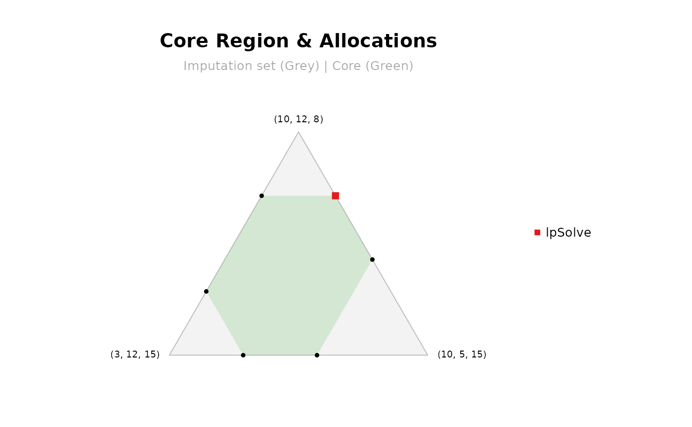

This function determines whether the core of a cooperative game is empty by solving a Linear Programming (LP) problem. If the core is non-empty, it returns a feasible stable allocation and computes all the geometric vertices of the core polytope.
Usage
mcstCorePoints(game = NULL, v = NULL)
# S3 method for class 'mcstp_core_point'
plot(x, titles = TRUE, ...)Arguments
- game
list; an object containing a cooperative game computed with
method = "exact"(e.g., frommcstGamePrivate). Default isNULL.- v
numeric vector; the characteristic function values \(v(S)\) for all \(2^n - 1\) coalitions, ordered by cardinality. Required if
gameisNULL.- x
the output from
mcstCorePoints.- titles
logical; if
TRUE(default), adds a main title and subtitle/legend information to the plot.- ...
additional graphical parameters passed to
mcstCorePlot.
Value
A list containing:
is_empty: logical; ifTRUE, the core is empty (no stable allocation satisfies all conditions).core_point: numeric vector; a feasible allocation inside the core.NULLif the core is empty.vertices: a matrix where each row represents a geometric vertex of the core polytope.NULLif the core is empty or \(n > 6\).n: the number of agents.total: the total cost of the game \(v(N)\).values: the characteristic function values \(v(S)\).
Details
The problem of finding a cost allocation \(x \in \mathbb{R}^N\) in the core is formulated as a Linear Programming system. The allocation must satisfy two fundamental conditions:
Efficiency: the total cost is completely allocated among the agents, i.e., $$\sum_{i \in N} x_i = v(N).$$
Coalitional rationality: no coalition pays more than its stand-alone cost, i.e., $$\sum_{i \in S} x_i \le v(S) \quad \forall S \subset N.$$
The function uses the lpSolve package to evaluate this system of equations and
inequalities. If a solution exists, the core is non-empty and a feasible allocation is returned.
Furthermore, for games with up to 6 players (\(n \le 6\)), the function automatically
utilizes the rcdd package to perform vertex enumeration. It converts the
system of linear inequalities into the exact geometric vertices
of the core. This is particularly useful for analyzing the bounds
of the core region.
The plot method provides a visualization of the core and the computed
feasible point by internally calling mcstCorePlot. It is supported
for games with 2, 3, or 4 players.
See also
mcstCoreCheck for checking the stability of a specific allocation.
mcstCorePlot for general core region visualizations.
mcstRules for an overview of the available rules and analysis tools in the package.
Examples
# Example 1: Non-empty core
vvals1 <- c(10, 12, 15, 20, 22, 25, 30) # 3 players
cp1 <- mcstCorePoints(v = vvals1); cp1
#> -------------------------
#> Core Emptiness Analysis
#> -------------------------
#> Players (n) : 3
#> Total Cost : 30
#>
#> Result: the core IS NOT EMPTY
#> A feasible core allocation:
#> 1 2 3
#> 10 10 10
cp1$vertices
#> [,1] [,2] [,3]
#> [1,] 10 8 12
#> [2,] 7 8 15
#> [3,] 10 10 10
#> [4,] 8 12 10
#> [5,] 5 12 13
#> [6,] 5 10 15
plot(cp1)

# Example 2: Empty core
vvals2 <- c(10, 10, 10, 15, 15, 15, 30)
cp2 <- mcstCorePoints(v = vvals2); cp2
#> -------------------------
#> Core Emptiness Analysis
#> -------------------------
#> Players (n) : 3
#> Total Cost : 30
#>
#> Result: the core IS EMPTY
#> No allocation satisfies efficiency and coalitional rationality simultaneously
# \donttest{
# Example 3: Using a game object
C <- matrix(c(0, 12, 15, 12, 0, 4, 15, 4, 0), byrow = TRUE, ncol = 3)
mcstCorePoints(game = mcstGamePrivate(C))
#> -------------------------
#> Core Emptiness Analysis
#> -------------------------
#> Players (n) : 2
#> Total Cost : 16
#>
#> Result: the core IS NOT EMPTY
#> A feasible core allocation:
#> 1 2
#> 12 4
# }